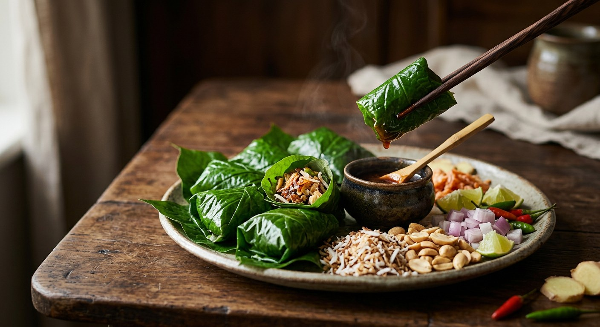

A cha phlu leaf folded around roasted coconut, dried shrimp, peanuts, shallot, ginger, chilli and lime with the palm-sugar sauce — one bite, every Thai flavour at once.

เมี่ยงคำ is the Thai appetizer that fits the whole flavour system on a single leaf. A cha phlu leaf is folded around a spoonful of palm-sugar sauce and a pinch of everything else — roasted coconut, dried shrimp, peanuts, shallot, ginger, chilli and lime, peel and all — and the whole thing goes in the mouth at once. Aroifin sells it as the health snack, with the traditional element-balancing logic: every taste has its place in the bite, so nothing needs a second mouthful.
The work is in the sauce, and the work is mostly roasting. In ReadTheCloud's family version — grandmother's recipe, the one used here — every aromatic gets its turn in the dry pan before being pounded: galangal and lemongrass first, then the coconut, the peanuts, the dried shrimp. Kapook's home version takes the opposite shortcut, pounding a fresh herb paste of galangal, lemongrass and shallot with the shrimp paste instead. Either way, the sugar needs watching: stir steadily, never raise the heat — sugar burns easily, and every source warns that the sauce thickens further as it cools.
Then the formats. Wongnai's skewer version pre-wraps the bites and threads them onto sticks for parties; Bloggang bottles a big batch of sauce that keeps in the fridge for ages; Kapook's is the weight-watcher's snack, everything weighed and nothing fried. But the classic serve is the self-wrap: the fillings in their own bowls, the sauce in the middle, the leaves on top — and everyone at the table assembling their own perfect bite.
| Thai | English | Amount |
|---|---|---|
| น้ำตาลปี๊บ | Palm sugar | 300 g |
| กะปิอย่างดี | Shrimp paste | 2 tbsp |
| น้ำปลา | Fish sauce | 1 tbsp |
| น้ำเปล่า | Water | 500 ml |
| ข่าแก่ | Mature galangal, shredded, dry-roasted, pounded | 50 g |
| ตะไคร้ | Lemongrass, sliced, dry-roasted, pounded | 2 stalks |
| กุ้งแห้ง | Dried shrimp, soaked briefly, pounded | 50 g |
| มะพร้าวคั่ว | Coconut, shredded, dry-roasted light brown, pounded | 50 g |
| ถั่วลิสงคั่ว | Roasted peanuts, pounded | 50 g |
| ใบชะพลู | Cha phlu leaves, large, washed, dried | as needed |
| มะพร้าวอ่อนหรือมะพร้าวแก่ | Young or mature coconut, diced | as liked |
| ขิงอ่อน | Young ginger, diced | as liked |
| หอมแดง | Shallots, diced | as liked |
| มะนาว (ทั้งเปลือก) | Lime, diced with peel | as liked |
| พริกขี้หนู | Bird's eye chillies, sliced thin | as liked |
| ถั่วลิสงคั่ว | Roasted peanuts | for the table |
| กุ้งแห้ง | Dried shrimp | for the table |
The aromatics in the sauce. ReadTheCloud and Kapook build on galangal and lemongrass (Kapook adds shallot to a fresh-pounded paste); Wongnai's Noina keeps only roasted galangal; the Wongnai skewer sauce has no aromatics at all — just sugar, shrimp paste, water and fish sauce. Bloggang simmers the galangal whole and bruised, then removes it before bottling.
How much palm sugar. From 100 g for 2-3 people (Noina) to 500 g for ten servings (Aroifin); 1 cup in Kapook and the skewer recipe; 300 g here. Nobody agrees — the sauce simply scales to the crowd.
Fish sauce or not. A tablespoon (ReadTheCloud) or to taste (Kapook, Wongnai) — but Aroifin and Bloggang leave it out entirely and let the shrimp paste carry all the salt.
White sugar. Only Bloggang blends sugars — 300 g palm to 200 g white — the bottling trick that stabilises the syrup for the fridge. Every other source is palm sugar alone.
The wrapper. Cha phlu is the standard, but Kapook offers thong lang leaves, and ReadTheCloud lists ใบยอ, ใบก้ามปู or white cabbage leaves as alternatives.
The serve. ReadTheCloud, Kapook and Noina set out bowls for self-wrapping at the table; Wongnai's skewer version pre-wraps the bites and threads them onto sticks instead.
This recipe is translated from the following Thai-language sources. Where they disagree, we've said so.
1. ReadTheCloud (CloudPang) — "เมี่ยงคำ อร่อยเกินใคร สูตรของแม่" (the family recipe used here) — readthecloud.co
2. Kapook — "เมี่ยงคำ อาหารว่างลดน้ำหนักเคี้ยวเพลิน ๆ" (the herb-paste home version) — cooking.kapook.com
3. Wongnai Cooking (ปากน้ำเมี่ยน) — "เมี่ยงคำเสียบไม้" (the pre-wrapped skewer version) — wongnai.com
4. Wongnai UGC (Noina Nutex) — "สูตร เมี่ยงคำ" (the 2-3 person batch) — wongnai.com
5. Aroifin — "เมี่ยงคำ อาหารว่างเพื่อสุขภาพ" (the ten-serving health version) — aroifin.com
6. Bloggang (บ่งบ๊ง) — "น้ำจิ้มเมียงคำ-เมี่ยงหลายคำ (สูตรเด็ด)" (the bottled batch) — bloggang.com